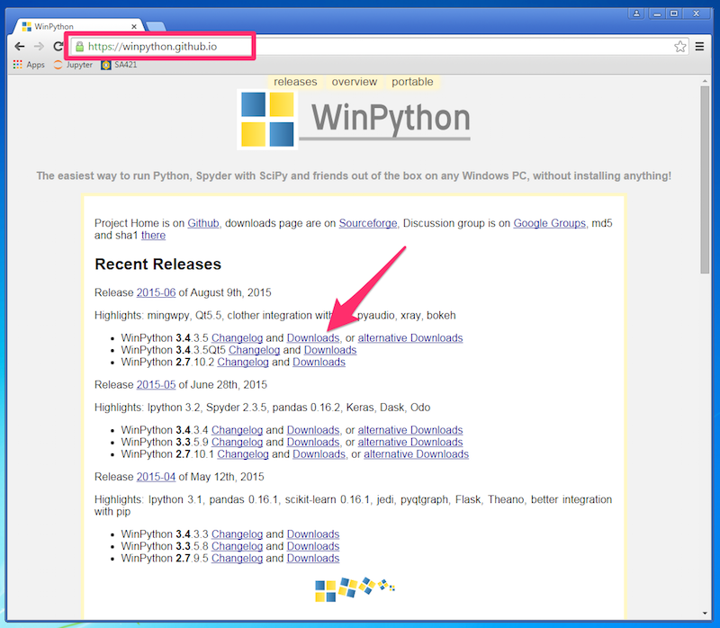
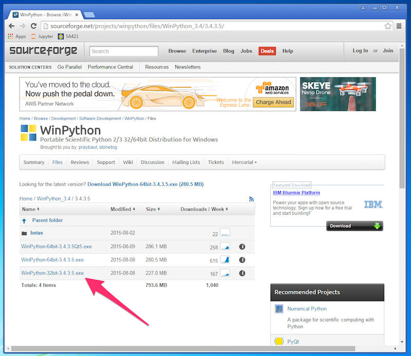
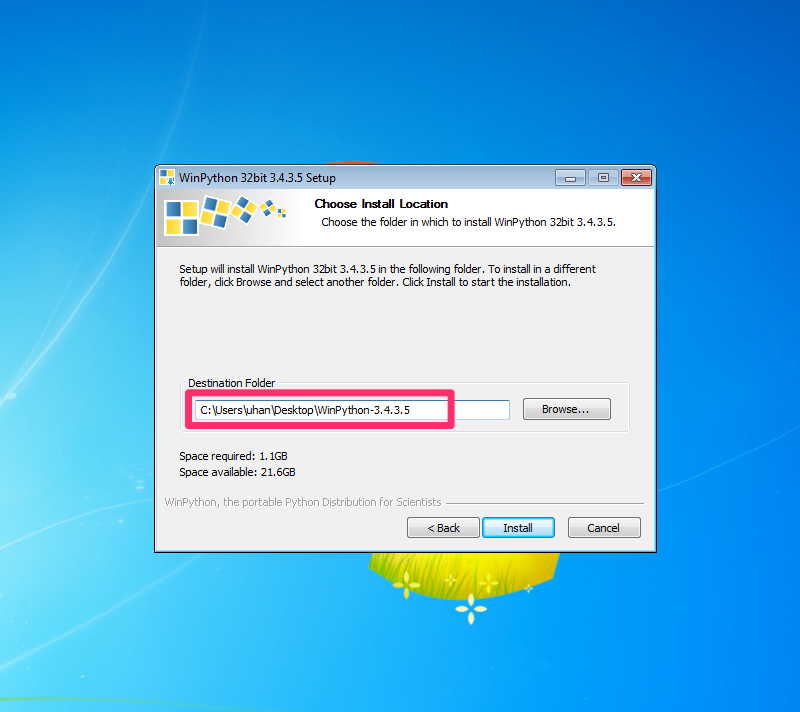
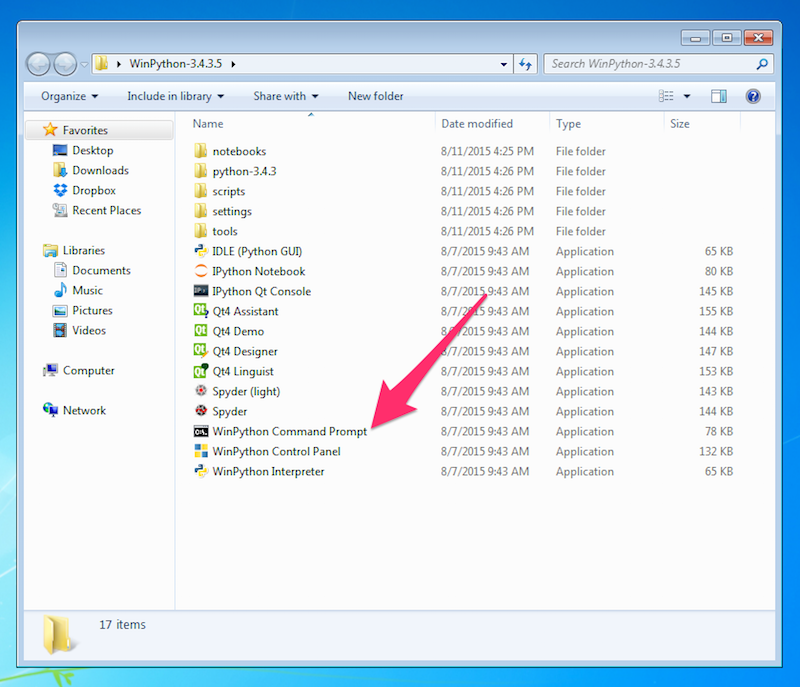
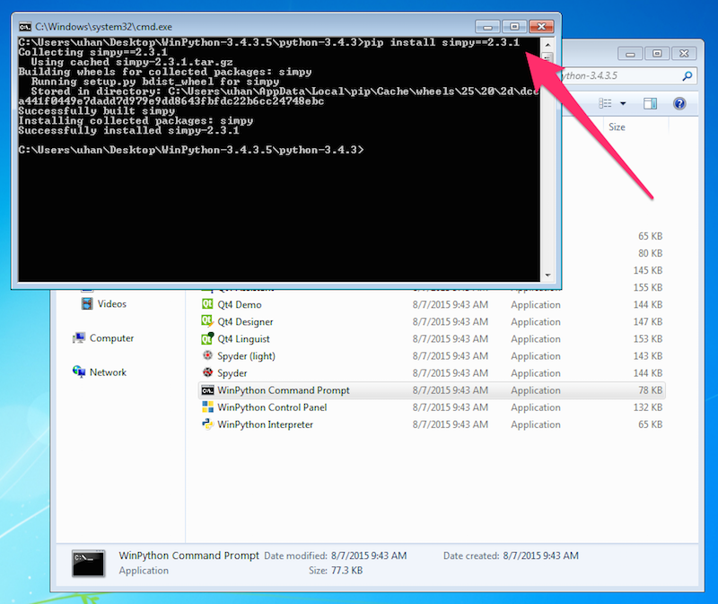
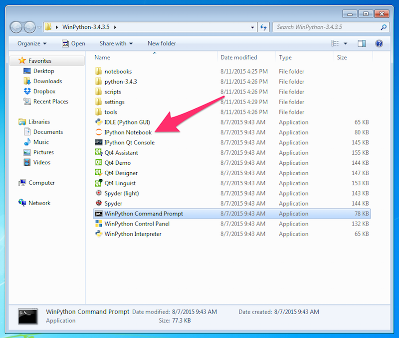
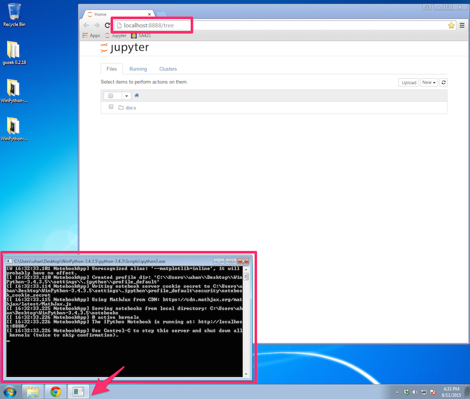

Installing Python, Jupyter, and SimPy
SA421 Fall 2015
Last updated: 11 August 2015
Overview
For this course, we will use WinPython, an easy-to-use Python distribution for Windows.
WinPython comes with Jupyter and a collection of useful scientific computing packages such as NumPy, SciPy and Matplotlib.
We will also use SimPy, a discrete event simulation package for Python.
Instructions
Here are some instructions on how to install WinPython and SimPy.
-
Go to the WinPython webpage here to download the 32-bit version of WinPython 3.4.3.5 — see the pictures below.


-
Install WinPython by launching the .exe file you downloaded in the previous step.
The installer will ask you where to put the WinPython folder.
As you can see in the picture below, I just put it on my Desktop so that it's easy to find.

-
Once the installation is complete, open the WinPython folder and launch
WinPython Command Prompt.

-
At the command prompt, type:
pip install simpy==2.3.1
and press Enter.
The command prompt window should look like this:

Close the command prompt.
-
To launch Jupyter, open IPython Notebook in the WinPython folder.

An ipython3.exe window should appear — just leave this open while you use Jupyter. In addition, your default browser should open with the Jupyter file browser.
See the picture below.
If you accidentally close your browser, you can get back to the Jupyter file browser at http://localhost:8888/, as long as the ipython3.exe window is also open.
